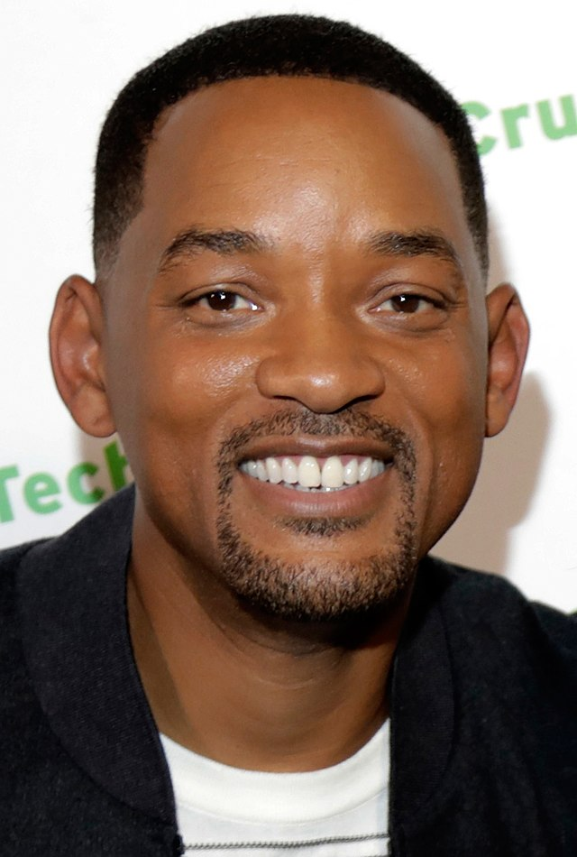
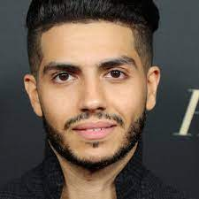
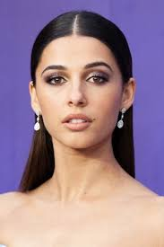
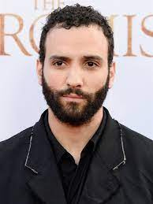
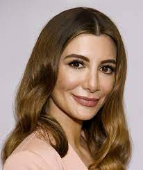
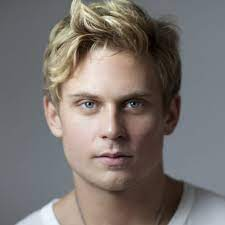

Carroll Smith II (born September 25, 1968), also known by his stage name The Fresh Prince, is an American actor, rapper, and producer. He began his career starring as a fictionalized version of himself on the NBC sitcom The Fresh Prince of Bel-Air (1990–1996). Noted for his work in film, television, and music, Smith has received multiple accolades, including an Academy Award and four Grammy Awards. As of 2021, his films have grossed over $9.3 billion globally, making him one of Hollywood's most bankable stars.
Mena Mansour Massoud (Arabic: مينا منصور مسعود; born September 17, 1991) is an Egyptian-Canadian actor[3] known for starring as the title character in the Disney fantasy film Aladdin (2019). He also starred as Jared Malik in the Canadian drama series Open Heart (2015), Tarek Kassar in the Amazon Prime series Tom Clancy's Jack Ryan (2018), Ethan Hart in the Hulu series Reprisal (2019), and Prince Thomas in the Netflix original film The Royal Treatment (2022).
Naomi Scott (born 6 May 1993) is an English actress and singer. Born in Hounslow, she rose to prominence for her performances in the television film Lemonade Mouth (2011) and the science fiction series Terra Nova (2011). In 2015, Screen International selected her as one of their "Stars of Tomorrow".She achieved further recognition for starring as Princess Jasmine in Disney's musical live-action fantasy film Aladdin (2019), which earned her a Saturn Award nomination. She has also starred in the superhero film Power Rangers (2017) and the action comedy film Charlie's Angels (2019).
Marwan Kenzari (Arabic: مروان كنزاري; born 16 January 1983) is a Dutch actor. Starting his career in 2008, he first came to prominence for his role in the 2013 film Wolf, which earned him a Golden Calf award for Best Actor. Since 2016, he has been starring in English-language films, including Aladdin (2019) and The Old Guard (2020), which earned him international recognition.
Nasim Pedrad (Persian: نسیم پدراد; born November 18, 1981) is an Iranian American actress, writer, and comedian. She was a cast member in the NBC sketch variety series Saturday Night Live from 2009 to 2014. She later went on to star in the Fox sitcoms Mulaney (2014–2015) and New Girl (2015–2018), the Fox horror comedy series Scream Queens (2015), and the TBS science fiction comedy series People of Earth (2017). Pedrad also created, produces, and starred in the TBS sitcom Chad (2021).
William Gregory Magnussen (born April 20, 1985) is an American actor. He has been featured in the films Into the Woods (2014), Birth of the Dragon (2016), Game Night (2018), and Aladdin (2019), and has had supporting television roles in Get Shorty (2017) and Maniac (2018). In 2021, Magnussen starred in the sci-fi series Made for Love on HBO Max and appeared in the films The Many Saints of Newark and No Time to Die.
